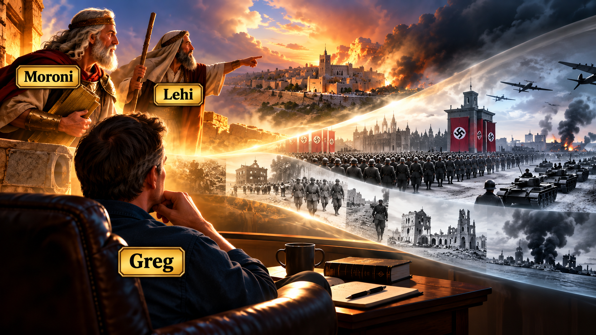

The MORE Jesus = More Reality Experiment
Watching Jesus TV Before the Future Happens
Moroni, Lehi, World War II, and the Practice of Prophetic Seeing
Not television about Jesus. By Jesus TV, I mean watching the world that is already in front of me, but trying to watch it with Jesus-themed eyes.
What would I have seen in 1933?
1936?
1938?
Could I have seen World War II coming before most people saw it?
Not necessarily the date. Not necessarily September 1, 1939. Not necessarily tanks crossing a particular border at a particular hour.
But could I have seen the trajectory?
I think so.
And that possibility has changed the way I think about prophets.
Moroni
Moroni Was Watching Us
Moroni says something astonishing:
—Mormon 8:35
Moroni is standing in one world and looking into another.
He sees us.
At least that is how he describes the experience: Jesus Christ hath shown you unto me.
That is prophecy in its strongest sense. Moroni isn't merely making a clever sociological forecast. He claims that Christ showed him something.
But there is another part of prophetic seeing that interests me.
Once Jesus shows Moroni something, Moroni looks.
He notices.
He interprets.
He identifies patterns.
He asks what kind of people we are becoming.
And then he speaks to people who aren't even there yet.
That sounds a lot like Jesus TV.
Lehi
Lehi Watched Jerusalem
Lehi gives us another version.
Jerusalem was still standing.
People were still buying things.
Families were still eating dinner.
Religious ceremonies were still happening.
People presumably got up in the morning, went to work, argued with their children, repaired things, visited neighbors, worried about money, and planned for next year.
Life looked sufficiently normal that leaving Jerusalem looked crazy.
This isn't going where you think it is going.
Destruction is coming.
Get out.
That is what fascinates me.
The prophetic person can sometimes look ridiculous precisely because everybody else is extrapolating tomorrow from yesterday, while the prophet is extrapolating tomorrow from what is happening today.
Lehi sees trajectory.
The city is still there.
But in some sense, Lehi can already see the city that will not be there.
1936
What Would Jesus TV Have Shown in 1936?
Now imagine transporting this way of seeing into Europe before World War II.
Suppose I am sitting in Germany in 1936 watching Jesus TV.
What should I watch?
Maybe I watch what is happening to the Jews.
Maybe that is one of the first channels Jesus tells me not to change.
People are being classified.
Excluded.
Mocked.
Blamed.
Dehumanized.
Their rights are disappearing.
Meanwhile Germany is rearming.
Hitler remilitarizes the Rhineland.
National humiliation is being transformed into national destiny.
Grievance is becoming identity.
Identity is becoming ideology.
Ideology is becoming government.
Government is becoming military power.
And military power is beginning to move.
Any one event can be explained away.
That is the problem.
Signal → Pattern → Trajectory → Fruit
This may be one way prophetic seeing works.
A signal appears.
One signal proves very little.
Then another appears.
And another.
Eventually the signals form a pattern.
If the pattern continues moving consistently in a particular direction, it reveals a possible trajectory.
Then I ask the Jesus question:
Love or hatred?
Liberty or domination?
Truth or propaganda?
Mercy or cruelty?
Human dignity or dehumanization?
Repentance or grievance?
Reconciliation or revenge?
Jesus said:
That is almost a technology for watching history.
Watch the fruit.
Inspired Inference
Maybe Prophets Sometimes Make Inspired Guesses
I want to leave room for something else.
Maybe prophets sometimes guess.
I don't mean that dismissively.
I mean something closer to inspired inference.
A prophet may receive direct revelation.
A prophet may see a vision.
A prophet may hear God's voice.
But a spiritually attentive person can also observe what God has already placed in front of him and ask:
That isn't necessarily revelation.
It might be inference.
It might be imagination.
It might be wisdom.
It might be experience.
It might be sociology.
It might be the Spirit nudging someone's attention toward facts everyone else is overlooking.
Or it might be some mixture of all of them.
I don't always know.
And perhaps I don't need to pretend that I know.
That distinction matters enormously to me.
I don't want to label every thought that pops into Greg's head:
That would be dangerous.
I can instead say:
Here is the pattern I think I see.
Here is where I think the pattern might be going.
Here is my guess.
Jesus, correct me if I'm wrong.
That feels much closer to “prove all things; hold fast that which is good.”
The Test
Prophecy Without Hindsight
There is another problem.
World War II looks obvious after World War II.
Hitler looks like Hitler because I already know Auschwitz.
I already know Poland.
I already know London.
I already know Stalingrad.
I already know Normandy.
I already know the photographs at the end.
That makes retrospective prophecy cheap.
The more interesting experiment would be to put myself in 1933 and refuse myself knowledge of 1934.
Look around.
What do I see?
Then advance one year.
1934.
What changed?
Then 1935.
1936.
1937.
1938.
Don't cheat.
Don't use the ending to interpret the beginning.
At what point would Greg have said, “Something terrible is forming here”?
And more importantly:
Why?
That becomes a test of Jesus TV.
The Prophet May Be the Person Who Refuses to Look Away
Maybe prophetic seeing isn't always seeing something nobody else can see.
Sometimes it may be refusing not to see something everybody could see.
That distinction feels important.
People want normalcy.
I want normalcy.
I want tomorrow to resemble yesterday.
I have food to make.
Bills to pay.
A fence to fix.
Church on Sunday.
Songs to sing.
Friends to talk with.
A bed to sleep in.
Life itself encourages me to assume continuity.
And that means one of the most difficult prophetic sentences may simply be:
Look at what is happening to those people.
Look at what that leader is saying.
Look at what he said five years ago.
Look at what he is doing now.
Look at which boundaries disappeared.
Look at which behaviors have become normal.
Look at what everyone laughed at three years ago that nobody laughs at anymore.
Look at the fruit.
Look again.
Sacred Imagination
Moroni's Sacred Imagination
This gives me another way of thinking about Moroni.
Moroni says Christ showed him us.
I believe him.
But then Moroni does something with what he sees.
He speaks imaginatively across centuries:
That phrase is beautiful to me.
As if ye were present.
That is sacred imagination.
Moroni mentally collapses time.
He brings future people into his present room.
And then he talks to them.
I am experimenting with something almost opposite.
I take Moroni, Lehi, Mormon, Nephi, Jesus, and other scriptural people and imaginatively bring them into my room.
What would Moroni notice?
What would Jesus have me look at?
What am I refusing to see because I have become accustomed to seeing it?
Welcome to Jesus TV.
Plucking Out My Babylon-Themed Eyes
That is why my metaphor of repeatedly plucking out my Babylon-themed eyes when they grow back makes increasing sense to me.
Babylon gives me eyes.
My culture gives me eyes.
Advertising gives me eyes.
Politics gives me eyes.
Algorithms give me eyes.
My tribe gives me eyes.
My appetites give me eyes.
My fears give me eyes.
And even yesterday's version of Greg gives today's Greg a pair of eyes.
So I watch again.
Same world.
Different eyes.
That does not guarantee that my interpretation is correct.
In fact, humility requires exactly the opposite assumption.
I can be wrong.
Moroni can claim, “Jesus Christ hath shown you unto me.”
Greg should be much more cautious before saying the same thing.
My ordinary formulation should probably be:
Then test it.
Wait.
Watch.
Pray.
Compare.
Correct.
Repent.
Look again.
Prophecy as Trajectory
Maybe one useful working definition is:
Sometimes God may reveal that future directly.
Sometimes scripture supplies the pattern.
Sometimes history supplies the analogy.
Sometimes careful observation reveals the trajectory.
Sometimes sacred imagination allows us to rehearse the consequences.
And sometimes we simply make our best Jesus-centered guess.
The important thing is not pretending those are all the same thing.
They aren't.
But they can all participate in the practice of prophetic seeing.
Lehi looked at Jerusalem and saw departure.
Moroni looked toward us and saw our doing.
A careful observer in 1930s Europe could have looked at seemingly disconnected events and begun seeing catastrophe.
And I can look at 2026.
Not because I know 2027.
I don't.
That is precisely the point.
The Experiment
Watching 2026 Without Knowing 2027
This might be the real experiment.
Pretend I don't know tomorrow.
Because I don't.
Watch today.
What are the signals?
Which signals are becoming patterns?
Which patterns have trajectories?
What fruit are they already producing?
Which people are being forgotten?
Who is being dehumanized?
What are we learning to tolerate?
What once shocked me but now seems ordinary?
Where is fear increasing?
Where is mercy increasing?
Where are people becoming more free?
Where are they becoming less free?
Where is Jesus already working that I have failed to notice?
And perhaps most importantly:
Because Lehi didn't merely predict Jerusalem.
He left.
Prophetic seeing became prophetic action.
That may be the ultimate test.
Not:
But:
That is a much more interesting experiment.
And a much safer one.
I don't need to announce that I know what happens next.
This is the pattern I think I see.
This is where I think it might lead.
This is the fruit I am seeing already.
This is what I think Jesus is inviting me to do about it.
And then—
keep watching.
#HearHim